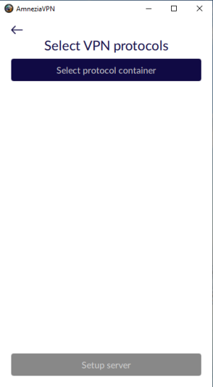
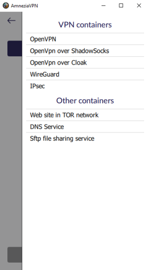
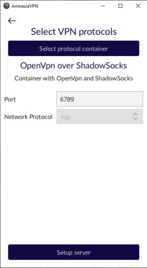
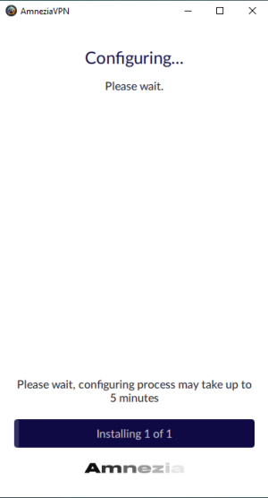
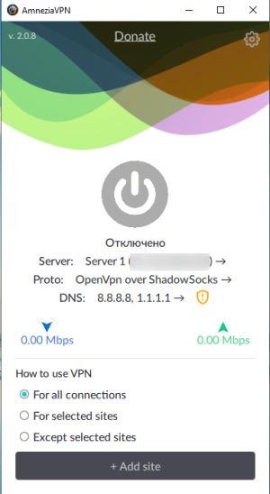

Инструкция по ручной установке
Шаг 1. Запустите AmneziaVPN
Шаг 2. Заполнение данных для подключения
- IP-адрес, если меняли порт для SSH - укажите его через двоеточие после IP
- Имя пользователя под которым будет производиться настройка сервера
- Пароль для пользователя, либо SSH-ключ: для этого жмем "Подключить с помощью SSH ключа" (Connect using SSH key) и в поле ввода вставляем содержимое приватного ключа
Шаг 3. Выбор ручной конфигурации
На данном этапе первое что Вы увидите - вопрос о том, что хотите использовать: ручную установку или автоматическую. Данная инструкция подразумевает ручную установку, поэтому ее и выбираем, нажав на "Настроить VPN протоколы вручную" (Configure VPN protocols manually).
Перед Вами появится окно с одной кнопкой - "Выбрать контейнер протокола" (Select protocol container), по нажатию которой у вас отобразятся все доступные к установке контейнеры.


Шаг 4. Установка
Для текущего примера остановимся на "OpenVPN over ShadowSocks" - этот контейнер соответствует опции "Средний уровень цензуры" (Medium censorship level) в режиме автоматической настройки.
После выбора нужного контейнера, перед Вами будет представлена пара опций, а именно используемый порт и возможность выбора TCP/UDP протокола - в том случае, если принимающая траффик часть поддерживает такую возможность.
Так, например, OpenVPN может работать как через TCP, так и через UDP. WireGuard работает только через UDP. А в случае OpenVPN over ShadowSocks принимать Ваш траффик будет именно ShadowSocks, который работает только через TCP протокол, поэтому в его случае выбор так же не предусмотрен.
Выбрав порт для контейнера, нажимаем на "Настроить сервер" (Setup server)
Далее Вы увидите экран с полосой прогресса - здесь Вам осталось дождаться окончания процесса. Чаще всего процесс занимает в районе 5 минут, после чего Вас встретит главное окно AmneziaVPN


